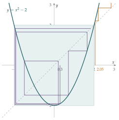

STEP III 2021, Question 8
Read the question before you go on. It is in the STEP III paper in OCR’s download of the 2021 STEP papers (a zip file): www.ocr.org.uk/Images/696588-2021-past-papers.zip
The hook
“Square it and subtract two” is about the simplest rule you could use to generate a sequence. Yet it divides the real line into two worlds. Start outside \([-2, 2]\) and the numbers explode to infinity, faster than exponentially. Start inside and they stay trapped for ever, wandering in a way that is, in a precise sense, completely unpredictable: one of the simplest examples of chaos.
The same rule, carried out with very large whole numbers, is the engine of the Lucas–Lehmer test, an efficient test for whether a Mersenne number \(2^p - 1\) is prime, which has found the current record prime and most of the other very largest known primes. This question explores the escaping side of the story and finds a hidden formula that makes the sequence completely solvable.
Before you start
Try some starting values. With \(a = 3\): \(3, 7, 47, 2207, \ldots\) With \(a = 1\): \(1, -1, -1, -1, \ldots\) With \(a = 0\): \(0, -2, 2, 2, 2, \ldots\) With \(a = 0.3\): \(0.3, -1.91, 1.648, 0.716, -1.487, 0.211, \ldots\)
Why can a number in \([-2, 2]\) never escape? What is the largest and smallest that \(x^2 - 2\) can be when \(-2 \leq x \leq 2\)?
If \(-2 \leq x \leq 2\) then \(0 \leq x^2 \leq 4\), so \(-2 \leq x^2 - 2 \leq 2\). The interval \([-2, 2]\) is mapped into itself. That will be half of part (ii).
Working it through
Stage 1 Escaping
Part (i) has a \(4^{n-1}\) in it, suggesting that the distance above \(2\) at least quadruples at each step. Write \(x_n = 2 + d\). What is \(x_{n+1}\) in terms of \(d\)?
\(x_{n+1} = (2 + d)^2 - 2 = 2 + 4d + d^2\). So if \(d \geq 0\), the new distance above \(2\) is \(4d + d^2 \geq 4d\).
Now induct. When \(n = 1\), \(x_1 = a = 2 + 4^0(a - 2)\). If \(x_n \geq 2 + 4^{n-1}(a - 2)\), then \(d = x_n - 2 \geq 4^{n-1}(a - 2) \geq 0\), so \[x_{n+1} - 2 \geq 4d \geq 4^n (a - 2). \qed\]
Stage 2 Escape if and only if \(|a| > 2\)
“If and only if” means two separate proofs. Which direction does part (i) almost give you, and what is missing?
If \(|a| > 2\): when \(a > 2\), part (i) gives \(x_n \geq 2 + 4^{n-1}(a - 2) \to \infty\). When \(a < -2\), the first step fixes the sign: \(x_2 = a^2 - 2 > 4 - 2 = 2\), and the sequence from \(x_2\) onwards is the same sequence started at \(x_2 > 2\), so it tends to infinity.
Only if: if \(|a| \leq 2\), then \(a \in [-2, 2]\), and by the observation above every term stays in \([-2, 2]\). A bounded sequence cannot tend to infinity.■
Stage 3 A hidden formula
Part (iii) looks forbidding. Before attempting it, it is worth finding a formula for \(x_n\).
If \(a > 2\), there is a number \(t > 1\) with \(a = t + \dfrac1t\). (Why?) What are \(x_2\) and \(x_3\) in terms of \(t\)?
The function \(t + 1/t\) increases from \(2\) to \(\infty\) as \(t\) goes from \(1\) to \(\infty\), so every \(a > 2\) can be written this way. Then \[x_2 = \left(t + \frac1t\right)^2 - 2 = t^2 + \frac{1}{t^2}, \qquad x_3 = \left(t^2 + \frac1{t^2}\right)^2 - 2 = t^4 + \frac1{t^4},\] and by induction \[x_n = t^{2^{n-1}} + t^{-2^{n-1}}.\] Squaring and subtracting \(2\) simply doubles the exponent. Now the question becomes manageable.
Stage 4 The product telescopes
What is \(\left(t - \frac1t\right)\left(t + \frac1t\right)\)? What happens if you multiply the result by \(t^2 + \frac1{t^2}\)?
\(\left(t - \frac1t\right)\left(t + \frac1t\right) = t^2 - \frac1{t^2}\), and then \(\left(t^2 - \frac1{t^2}\right)\left(t^2 + \frac1{t^2}\right) = t^4 - \frac1{t^4}\), and so on: each factor \(x_k\) doubles the exponent in a difference of two powers. So \[\left(t - \frac1t\right) x_1 x_2 \cdots x_n = t^{2^n} - t^{-2^n}.\]
Compute \(x_{n+1}^2 - 4\) in terms of \(t\), and compare with the product.
\[x_{n+1}^2 - 4 = \left(t^{2^n} + t^{-2^n}\right)^2 - 4 = \left(t^{2^n} - t^{-2^n}\right)^2.\] Since \(t > 1\), \(t^{2^n} - t^{-2^n} > 0\), so \(\sqrt{x_{n+1}^2 - 4} = t^{2^n} - t^{-2^n} = \left(t - \frac1t\right) x_1 x_2 \cdots x_n\). Therefore \[\frac{\sqrt{x_{n+1}^2 - 4}}{x_{n+1}} = \frac{\left(t - \frac1t\right) x_1 \cdots x_n}{x_{n+1}},\] which is \(y_n\) for every \(n\) exactly when \(A = t - \frac1t\). Finally, \(\left(t - \frac1t\right)^2 = \left(t + \frac1t\right)^2 - 4 = a^2 - 4\), so the condition is \(A = \sqrt{a^2 - 4}\), that is, \[a = \sqrt{A^2 + 4}.\] (This is greater than \(2\), as required, because \(A > 0\).)■
Stage 5 Does \(y_n\) converge?
With this value of \(a\), \[y_n = \frac{\sqrt{x_{n+1}^2 - 4}}{x_{n+1}} = \sqrt{1 - \frac{4}{x_{n+1}^2}}.\] Since \(x_{n+1} \to \infty\) by part (ii), \(\frac{4}{x_{n+1}^2} \to 0\) and \(y_n \to 1\). The sequence converges, to \(1\).■
So the infinite product \(x_1 x_2 x_3 \cdots\) grows at exactly the same rate as \(x_{n+1}/A\): we have found the precise growth rate of a product of rapidly growing terms.
Looking back
An invariant region. \([-2, 2]\) is mapped into itself, and that one fact settles half of part (ii).
A substitution that linearises. Writing \(a = t + 1/t\) turned “square and subtract \(2\)” into “double the exponent”. Messy nonlinear behaviour became simple.
Telescoping again. As with the products in Section 2.5, a product of many factors collapsed because each factor fitted with the next.
What’s really going on
What happens inside \([-2, 2]\)? There, \(a = t + 1/t\) fails (it needs \(|a| \geq 2\)), but the trigonometric version works: write \(a = 2\cos\theta\). Then \(x_2 = 4\cos^2\theta - 2 = 2\cos 2\theta\), and in general \[x_n = 2\cos\bigl(2^{n-1}\theta\bigr).\] So inside the interval the map simply doubles an angle. That sounds harmless, but doubling an angle is chaotic. Write \(\theta/\pi\) in binary: doubling shifts the binary point one place to the right, throwing away the leading digit. After \(50\) steps, \(x_n\) depends on the \(51\)st binary digit of \(\theta/\pi\), so an error in the starting value of \(10^{-15}\) (the precision of a typical computer) makes the answer after \(50\) steps completely unreliable. This sensitive dependence on initial conditions is the hallmark of chaos, illustrated in Figure 2.8.1. The map \(x \mapsto x^2 - 2\) is equivalent, by a change of variable, to the famous logistic map \(x \mapsto 4x(1 - x)\), which we meet again in Section 8.7.

Finding the largest primes
A Mersenne number is \(M_p = 2^p - 1\). In 1876 Édouard Lucas found, and in 1930 Derrick Lehmer completed, a remarkable test for whether \(M_p\) is prime (for \(p\) an odd prime): start with \(s_0 = 4\) and repeatedly square and subtract \(2\), reducing modulo \(M_p\) each time. Then \[M_p \text{ is prime} \iff s_{p-2} \equiv 0 \pmod{M_p}.\] For \(M_7 = 127\): \(s = 4, 14, 194 \equiv 67, 67^2 - 2 \equiv 42, 42^2 - 2 \equiv 111, 111^2 - 2 \equiv 0\), so \(127\) is prime. The connection with this question is the substitution: \(4 = t + 1/t\) with \(t = 2 + \sqrt3\), so \(s_k = (2+\sqrt3)^{2^k} + (2-\sqrt3)^{2^k}\), and the proof of the test uses arithmetic with numbers of the form \(a + b\sqrt3\), rather like the Gaussian integers of Section 1.6. Because each step needs only one squaring, the test is extremely fast, which is why most of the very largest known primes, including the current record holder, are Mersenne primes (not all of them are: other special forms, such as \(a^{2^n} + 1\), have their own fast tests). As of the time of writing the record is \(2^{136279841} - 1\), a number with more than \(41\) million digits, found in 2024.
The Mandelbrot set
Replace \(-2\) by any constant \(c\) and allow complex numbers: \(z \mapsto z^2 + c\). The set of \(c\) for which the orbit of \(0\) stays bounded is the Mandelbrot set. Our map has \(c = -2\), the leftmost point of the Mandelbrot set, and the set of starting values whose orbits stay bounded (its Julia set) is exactly the interval \([-2, 2]\) that we found in part (ii). For almost every other \(c\), that set is a fractal.
The thinking skill
If an iteration looks complicated, look for a substitution that turns it into something simple, like doubling or adding a constant.
Here \(x = t + 1/t\) and \(x = 2\cos\theta\) turned \(x \mapsto x^2 - 2\) into doubling. In the theory of dynamical systems this is called a conjugacy, and finding one is often the key to understanding a system completely.
Try this next
Inside the interval. Prove that if \(a = 2\cos\theta\) then \(x_n = 2\cos(2^{n-1}\theta)\). Find all values of \(a\) for which \(x_3 = a\) but \(x_2 \neq a\). (Hint: you want \(4\theta \equiv \pm\theta\), modulo \(2\pi\).)
Lucas–Lehmer by hand. Use the test to show that \(M_5 = 31\) is prime and that \(M_{11} = 2047\) is not. (For \(M_{11}\) you will need nine steps; a calculator helps. Check your conclusion by factorising \(2047\).)
An explicit example. Take \(A = \frac{3}{2}\). Find \(a\) and \(t\), and check the formula \(y_1 = \sqrt{x_2^2 - 4}/x_2\) numerically.
A sum that telescopes. harder With \(a = t + 1/t\) and \(t > 1\), show that \[\frac{1}{x_1 x_2 \cdots x_n} = \frac{t - t^{-1}}{t^{2^n} - t^{-2^n}}.\] Using the identity \(\dfrac{1}{z - 1} - \dfrac{1}{z^2 - 1} = \dfrac{z}{z^2 - 1}\) with \(z = t^{2^n}\), deduce that \[\frac{1}{x_1} + \frac{1}{x_1 x_2} + \frac{1}{x_1 x_2 x_3} + \cdots = \frac1t.\] Check this numerically when \(a = 3\).
Further reading
Ian Stewart, Does God Play Dice? (Penguin). The classic popular account of chaos, including the logistic map.
Steven Strogatz, Nonlinear Dynamics and Chaos (CRC Press). The standard undergraduate introduction; Chapter 10 is about one-dimensional maps like this one.
Marcus du Sautoy, The Music of the Primes (Fourth Estate). Includes the story of the hunt for Mersenne primes.